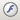

В этом разделе
Специальный программный модуль реализует HTML-редактор, позволяющий изменять текст и графику веб-страницы в режиме реального времени через браузер. Меню окна редактора имеет очень удобный интерфейс, представляющий собой типовой набор действий текстового редактора MS Word.
Вы сможете размещать внутри страницы изображения, форматировать текст, добавлять таблицы, делать разметку и т.д. Внешнее оформление созданных вами страниц не будет отличаться от уже существующих. На базе изменений (удаление, создание, редактирование) редактор генерирует HTML-код. Обновление страницы в публичном разделе сайта выполняется автоматически после сохранения изменений.
При редактировании выполняется изменение только внутренней (рабочей) области страницы, что позволяет сохранить общий дизайн сайта. Управлять сайтом с помощью HTML-редактора вы можете с любого компьютера, на котором установлен Internet Explorer (версии 5.0 и выше) и FireFox (версии 1.0 и выше).
Редактор может иметь отличающийся интерфейс, в зависимости от прав доступа конкретного пользователя и способа открытия редактора. Для удобства работы форма визуального HTML-редактора разделена на три зоны:
- Редактирование;
- Свойства;
- Визуальные компоненты.
Последние две зоны можно свернуть и вновь открыть воспользовавшись кнопками в нижней панели редактора.
Настройка интерфейса редактора
Редактор имеет регулируемый интерфейс в котором можно отключить или включить панели:
| Панель
| Описание
|
|---|---|
| Стандартная | Неотключаемая панель с основными командами |
| Управление и настройки
| Панель команд администратора. В зависимости от уровня доступа может быть не видна.
|
| Стиль | Управление стилями текста |
| Форматирование | Форматирование текста
|
| Режимы редактирования | Выбор одного из трех режимов: визуального, в исходных кодах или совмещенного. |
| Шаблон сайта | Выбор шаблона в котором осуществляется редактирование. |
Настройка интерфейса осуществляется вызовом Диалога настроек визуального редактора по кнопке . Диалог настроек состоит из трех закладок, если визуальный редактор открыт из Панели управления и из двух, если открыт из публичных разделов. В диалоге настройки, открытом из публичных разделов отсутствует Панель инструментов.
| Панель инструментов | |
|---|---|
| Стандартная | Неотключаемая панель
|
| Стиль | Можно отключить
|
| Форматирование
| Можно отключить |
| Режимы редактирования | Можно отключить |
| Шаблон сайта | Можно отключить |
| Управление и настройки | Может быть не видимой, если права пользователя ограничены администратором |
| Запоминать положение панелей | Можно отключить |
| Панель задач
| |
| Компоненты 2.0
| Может быть не видимой, если права пользователя ограничены администратором |
| Свойства | Можно отключить |
| Сниппеты | Можно отключить |
| компоненты 1.0 | Может быть не видимой, если права пользователя ограничены администратором |
| Запоминать положение панелей | Можно отключить |
| Дополнительные настройки
| |
| Показывать подсказки к параметрам компонентов | Можно отключить. |
| Использовать визуальные эффекты | Можно отключить. Отключение рекомендуется для слабых машин.
|
Панель инструментов HTML-редактора
| Общие действия | |
|---|---|
| Сохранение и выход из редактора | |
| Выход без сохранения | |
| Создание новой страницы | |
| Сохранить и продолжить редактирование | |
| Сохранить под другим именем | |
| Переход к редактированию параметров страницы | |
| Переключение в полноэкранный режим. | |
| Изменение настроек визуального редактора. | |
| Вставить из Word. Позволяет очистить добавляемый текст от дополнительных элементов форматирования (например, стилей). | |
| Вставить фрагмент как текст. | |
| Выделить все на странице. | |
| Отменить выполненное действие. | |
| Вернуть отменённое действие. | |
| Отобразить или скрыть границы таблиц. | |
| Создать таблицу. | |
| Добавить якорь. | |
| Вставить гиперссылку. | |
| Удалить гиперссылку. | |
| Добавить изображение. | |
| Вставить специальный символ. | |
| Проверка орфографии. | |
|  | Вставка Flash-ролика. |
| Переключение в режим визуального редактирования. | |
| Переключение в режим редактирования исходного кода страницы. | |
| Переключение в совмещённый режим редактирования. | |
| Свойства текста | |
| Цвет фона. | |
| Цвет текста. | |
| Кнопки форматирования текста | |
| Полужирный. | |
| Курсив. | |
| Подчёркнутый. | |
| Выравнивание абзаца по левому краю. | |
| Выравнивание абзаца по центру. | |
| Выравнивание абзаца по правому краю. | |
| Выравнивание абзаца по ширине. | |
| Нумерованный список. | |
| Маркированный список. | |
| Уменьшить отступ. | |
| Увеличить отступ. | |
| Добавить горизонтальный разделитель. | |
| Удалить форматирование. | |
| Элементы выбора начертания | |
| Предопределённые стили текста (CSS).
Примечание: Для сохранения дизайна сайта при форматировании текста рекомендуется пользоваться предопределёнными стилями. | |
| Уровень (формат) текста. Например, Заголовок1, Заголовок2, ..., Основной текст. | |
| Шрифт. | |
| Размер шрифта. | |
| Шаблон (дизайн) сайта, в соответствии с которым будет отображаться страница. | |
| Дополнительно | |
| Вставить разделитель страниц для печати. | |
| Вставить разделитель страниц <BREAK/> для вывода постраничной навигации. | |
|
| |
Загрузка графики на сайт
HTML-редактор позволяет загружать графику с локального диска и размещать ее на веб-странице. Процесс размещения изображения очень прост:
- Выберите место для изображения на странице, установив туда позицию курсора, и нажмите кнопку
 на панели редактора. Откроется диалог Новый рисунок.
на панели редактора. Откроется диалог Новый рисунок. - Перейдите к форме загрузки изображения, нажав кнопку
 рядом с полем Путь к изображению. Откроется окно Открыть файл.
рядом с полем Путь к изображению. Откроется окно Открыть файл. - С помощью Менеджера файлов выберите папку на сервере, в которую будет сохранено изображение (обычно
images). - На закладке Загрузить файл укажите путь к загружаемому файлу на локальном компьютере. Для выбора файла воспользуйтесь кнопкой Обзор.
- Нажмите кнопку Загрузить. Указанный файл будет загружен в выбранную папку.
- Если отмечена опция Открыть файл после загрузки, то после нажатия кнопки Загрузить изображение будет открыто в форме добавления изображения.
- Если необходимо, укажите дополнительные параметры изображения: ширину, высоту, толщину рамки и т.д.
- Нажмите кнопку Сохранить.
Визуальные компоненты
Компоненты являются блоками, с помощью которых строится публичная часть сайта. Они позволяют повторно использовать единожды написанный и отлаженный код в рамках одного сайта или на разных сайтах. Визуальные средства среды "1C-Битрикс: Управление сайтом" позволяют размещать и настраивать компоненты без написания кода. Поставляемые с продуктом системные компоненты регулярно обновляются, при этом расширяется функционал компонентов и исправляются возможные ошибки.
Визуальные компоненты доступны в двух версиях. В компонентах версии 2.0 разделены логика и представление. Для одной логики может быть создано несколько представлений, в том числе зависящих от шаблона текущего сайта. Нет необходимости изменять логику компонента для изменения особенностей его показа. Поэтому управлять внешним видом информации, выводимой компонентом версии 2.0, значительно проще.
Компоненты версии 2.0 делятся на простые и комплексные. Простые (обычные, одностраничные) компоненты создают какую-либо область на одной странице. Комплексные (сложные, многостраничные) компоненты создают разделы сайта, например, новостной раздел или раздел фотогалереи.
Для быстрого размещения компонентов на странице разработан специальный интерфейс в рамках визуального HTML-редактора. При редактировании страницы можно выбрать подходящий компонент из списка и переместить его в рабочую область страницы.
Компоненты включают набор параметров, определяющих поведение компонента. Основная особенность компонентов заключается в том, что они позволяют управлять данными параметрами через визуальный интерфейс продукта: после размещения компонента в рабочей области внизу страницы отобразится панель свойств компонента в зоне Свойства. Например, панель свойств компонента Новости имеет следующий вид:
Если палитра свойств не отображается, следует выделить компонент, кликнув по нему указателем мыши. После установки требуемых свойств, страница готова к отображению. В зоне Свойства производится настройка компонента
| © «Битрикс», 2001-2008, «1C-Битрикс», 2008 | 1С-Битрикс: Управление сайтом |